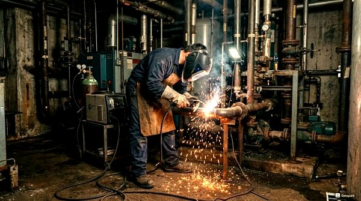
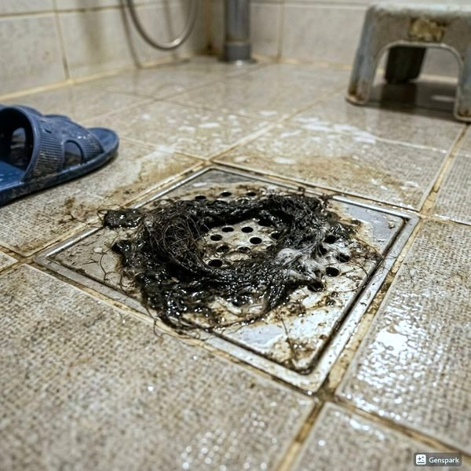
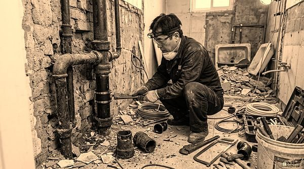

오래된 집 배관 교체 시기와 비용 가이드
2026년 4월 12일 | 제우스시설관리

국내 주택의 평균 배관 수명은 20~30년입니다. 1990년대 이전에 지어진 건물은 대부분 아연도금 강관(백관)을 사용했는데, 이 배관은 내부에 녹이 슬어 수질 저하와 누수를 유발합니다. 수도꼭지에서 붉은 물이 나오거나 수압이 떨어졌다면 배관 교체를 고려해야 합니다.
배관 종류별 수명은 다릅니다. 아연도금강관(백관)은 15~20년, 동관은 30~40년, 스테인리스관은 50년 이상, PVC관은 30~50년입니다. 현재는 대부분 스테인리스관이나 PB관(폴리부틸렌관)으로 교체하며, 내식성과 내구성이 우수합니다.

배관 교체가 필요한 신호는 명확합니다. 녹물이 나온다, 수압이 급격히 떨어졌다, 배관에서 쿵쿵 소리가 난다, 벽이나 천장에 습기가 차거나 곰팡이가 핀다. 이런 증상이 2가지 이상이면 즉시 전문가 점검을 받으세요.
제우스시설관리는 관로탐지기로 벽 속 배관의 정확한 위치와 상태를 비파괴로 진단합니다. 내시경 카메라로 배관 내부 부식 정도를 확인하여 부분 교체와 전체 교체 중 합리적인 방안을 제안합니다.

배관 교체 비용은 구간과 배관 종류에 따라 다릅니다. 부분 교체는 30만~100만원, 전체 교체(원룸 기준)는 150만~300만원 수준입니다. 제우스시설관리는 무료 현장 진단 후 정확한 견적을 제시합니다. 28분 내 출동, 전화: 010-4406-1788